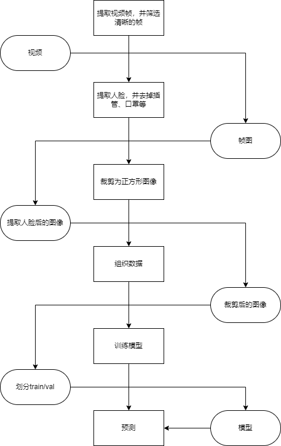

背景
企业实习中遇到的场景。
输入是ICU中病人的一段视频，输出是基于判断该病人是否贫血。
甲方给出了300多个的视频，每个视频对应一个病人。其中重度贫血样本最少，轻度贫血的样本量最多。
（说实在的，这个任务实在是有点玄学，查了一些资料，也没有理论依据。但是甲方说有经验的医生看几眼就能看出来病人是否是贫血，所以只能硬着头皮做。）
在实践过程中，得到了专家的指点，故把专家给出的技巧和实践中遇到的若干问题和解决思路记录下来。
数据处理和算法流程
如图。圆角矩形是数据，矩形是处理流程

指导纪要
本节记录专家给出的一些指导要点。
明确需求
在开始之前，需要明确需求，针对本次任务主要是明确一下几点：
- 目标是什么？最终的算法模型是科研，还是落地应用。如果是落地应用，那么可能更看重重度贫血的召回。
- 明确输入：是一段视频，还是一张照片，如果是一段视频还要考虑时序信息。
- 预测样本是已知的还是未知的：未知。
- 是否能有更多的数据？能，但比较慢，毕竟实际情况就是ICU的病床数量比较少。总样本量就那些。
分析bad case
找一个模型快速实现，（我们这里使用的是Efficient Net），基于这个baseline，分析bad case。
所谓bad case 就是模型经过训练后，预测错的case。分析bad case非常重要。（这一点在我实践的过程中没有重视，原因是ICU的病人的视频和照片容易引起不适）
分析bad case的目的有如下几个：
- 确定算法上限：数据决定算法上限，模型只是在逼近这个上限。我们的模型做到什么样才算可以交差了，不是拍脑袋决定的，而是由本步骤得到的算法上限决定的。
- 如果人眼分辨起来都比较困难，那该任务可能是不可实现的。
- 纠正数据（标注）问题。在分析bad case的时候我发现有一些视频帧非常模糊，后面通过计算清晰度，将视频帧中比较模糊的图像去除掉了。
调参
在明确了算法上限之后，再进行调参。
- train阶段：
- 针对数据不均衡的问题，主要有三种方式：对每一个类别进行加权；把占比大的分类样本量调低；数据增强。（前两种在以前的实践中提升不大，最后一种PyTorch有现成的code）
- 针对模型，一般来说模型的分类力度要比需求的粒度更细，在该场景下，需求要求二分类，而模型取四分类。方便后续的调整。
- 测试后，画出混淆矩阵，看哪几个子类容易混淆，再对混淆的子类单独训练模型。（多个模型级联）
- 更换loss：我们尝试了把交叉熵损失换成center loss、focal loss，但效果也没有好到哪去。
- val阶段：
- loss：在该场景下，模型会给出四个分数，分别对应四个类别的可能性。一般是取四个分数中max对应的分类，作为最后的分类结果。修改阈值以改变最后的分类结果（比如，当重度贫血的概率大于人为设定的X时，就认为分类结果为重度贫血）。
- X怎么定？X的值取决于指标。比如我想要重度贫血的Recall达到99%，那我把预测的重度贫血的分数由高到低排序，画一个最低线，在该线之上都被预测为重度贫血，那么该线就是我们想要的X。
- loss：也可以给四个分数分别乘上四个权重。这条与上条的区别是，上一条可以轻易的确保Precision或Recall。
其他
手工提取特征V.S.自动提取特征
上面的数据处理流程图中可见，为了避免背景（病床等）干扰，我们先用网上一个训练好的模型提取人脸。再把提取的人脸拿去训练。
由于提取的效果有限，后来又使用K-means算法对颜色进行聚类，设置一个阈值，把大部分图像中病人的插管，口罩等去掉，用黑色背景代替。（当然效果依然有限）
一开始我们认为通过手工提取特征后，再丢到网络里训练，这样的效果会更好。
但专家认为并非如此，实际效果也确实如专家所料。
专家说，手工提取特征的缺点是，提取特征的同时会损害图像本身（图像出现一小块一小块的黑色背景）；其次，手工提取特征需要手工设定一个阈值，而这个阈值的最佳情形在训练集和测试集可能是不同的。
专家又说，在以往的实践中，深度学习的自动提取特征效果更好、更稳定。
三百个样本够不够用
样本够不够取决于问题的难度。没有绝对意义上的够不够。
预训练OR没有预训练
使用预训练的网络模型要比没有预训练的模型更好。（具体原因忘了。）
交叉验证
虽然数据都是随机的分到train或者val，但是为了防止，分到train的数据太简单、val的数据太难和分到train的数据太难、val的数据太简单，会导致模型最后的效果不一样。为了提高模型的鲁棒性，需要K-Fold交叉验证。
多次迭代训练
由易到难多轮迭代。
先人工筛选出一些简单样本，按照一定比例组织数据进行训练，得到一个可以分类简单样本的模型。
再筛选出比简单样本稍难一点的样本，按照一定比例组织数据进行训练，得到一个可以分类比简单样本稍难样本的模型。
……
依次类推，直到所有样本都丢进去训练。
这里所说的简单是人容易分辨的。
如果所有样本人都不容易看出来怎么办？
那就先进行一次整体的训练。找到本次训练中模型预测正确的样本，这样的样本即为模型认为的简单样本
这种方法的优点是，效果会更好。（专家的原话是，屡试不爽）
我想可能是因为它比较符合人由易到难的学习思路。
缺点就是耗时长，人干预的时间长。（毕竟需要挑样本，挺累的。。）
Attention
如果希望模型集中到某些局部特征可以使用attention机制。
对于不清楚的代码或者参数
细究论文、源码。